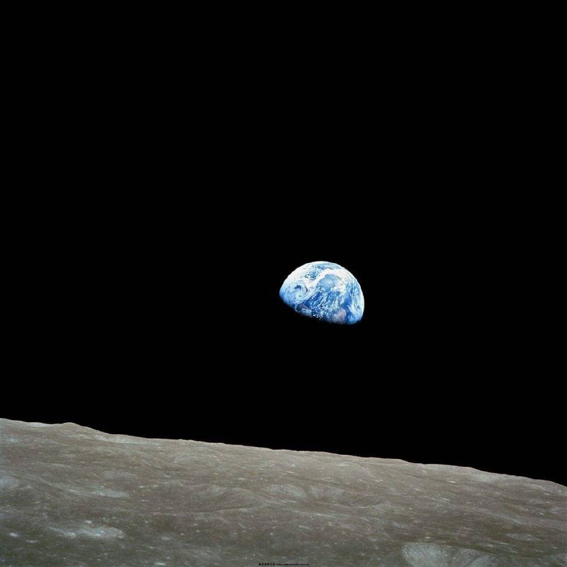

桌面应用
Focus Desk
总忍不住在学习时切去别的网站，于是给自己做了这个 Windows 专注桌面：资料、网页和番茄钟放在一起，少一点分心。


01
总忍不住在学习时切去别的网站，于是给自己做了这个 Windows 专注桌面：资料、网页和番茄钟放在一起，少一点分心。
把博客文章搬到公众号时，重复排版很费事。这个工具从 Markdown 生成图文草稿，预览、检查后，再由自己决定发布。
把几次建模中用到的方法整理成 Skill，方便和 AI 一起拆题、写代码、检查论文，也提醒自己核对数据和结果。
在导师指导下做的医学图像分类论文复现。记录数据检查、两阶段训练和结果复核，也记录实验中还没解决的问题。
03
建模手、代码手
论文手 · MCM
论文手、建模手
04
浙江理工大学
信息与计算科学 · 2029 届
我是李承晟，也叫 Kevin，目前就读于浙江理工大学信息与计算科学专业，很高兴与你相遇。
我个人的”舒适区“是 AI 前沿、Agent 使用、vibe 开发、数学/统计建模等。碰到感兴趣的东西，我通常会先上手试试，再慢慢弄明白它是怎么回事。
05
欢迎交流数据、建模、AI 工具与项目合作。